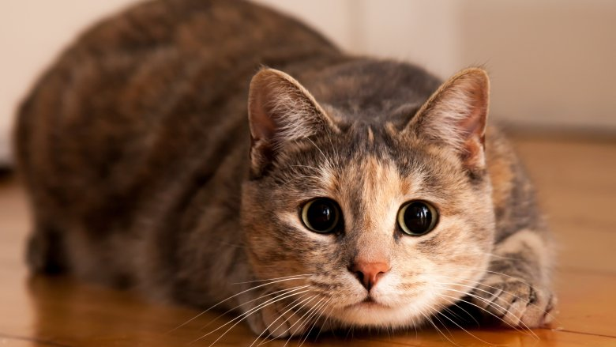
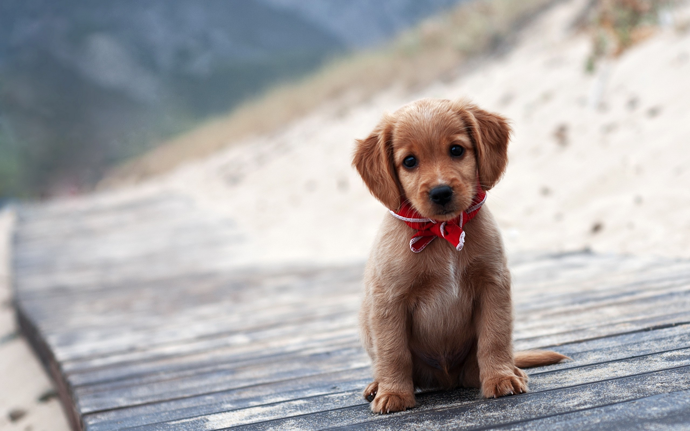
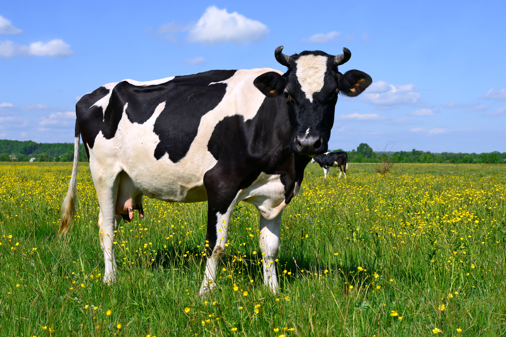
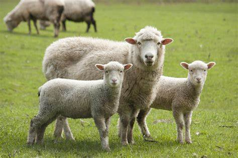
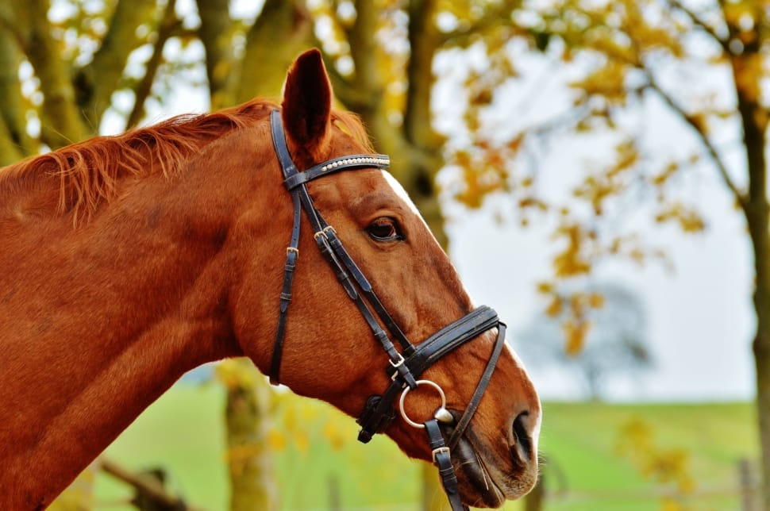

Cat-Cat is a domestic species of small carnivorous mammles. It is the only domesticated species in the family felidae and is often reffered to as the domestic cat to distinguish it from the wild members of the family
Dog-The domestic dog is a domesticated descendant of the wolf. The dog derived from an ancient,extinct wolf,with the modern grey wolf being dog's nearest living relatives. The dog was the first species to be domesticated, by hunter-gatherers over15,000 years ago,before the development of agriculture
Cow-Cattle,or cows and buls,are large domesticated cloven-hooved herbivores. They are prominent modern member of the subfamily bovinae,are the most widespread species of the genus Bos,and are most commonly classified collectively as Bos taurus.
Sheep-Sheep are quadrupedal,ruminant mammals typically kept as livestock. Like all ruminants ,sheep are members of the order artiodactyla,the even-toed ungulateds. Although the name sheeep applies to many species in the genus Ovis, is everyday usage it almost always refers to Ovis aries
Horse-The horse (Equus ferus caballus) is a domesticated odd-toed ungulate mammal. It belongs to the taxonomic family Equidae and is one of two extant subspecies of Equus ferus. The horse has evolved over the past 45 to 55 million years from a small multi-toed creature,Eohippus,into the large,single-toed animal of today.
